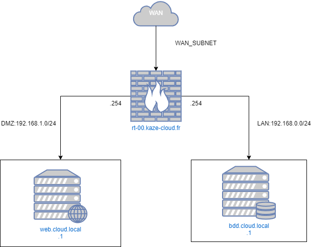

Procédure installation & sécurisation site Wordpress [POC]
Cette documentation abordera de comment installer un site Wordpress de façon sécuriser pour un contexte de production.
Réseaux
Topologie

Les entreprises disposant d’un site Web public que les clients utilisent doivent rendre leur serveur Web accessible à Internet. Pour protéger le réseau local de l’entreprise, le serveur Web est installé sur un serveur distinct des ressources internes. La DMZ permet la communication entre les ressources commerciales protégées, telles que les bases de données internes, et le trafic qualifié d’Internet.
Un réseau DMZ sert de tampon entre Internet et le réseau privé d’une entreprise. La DMZ est isolée par une passerelle de sécurité, telle qu’un pare-feu, qui filtre le trafic entre la DMZ et un réseau LAN. Le serveur DMZ par défaut est protégé par une autre passerelle de sécurité qui filtre le trafic provenant de réseaux externes.
Nous utiliseront une machine virtuelle qui utilisera opnsense comme OS. Qui sera office de routeur firewall. Le compartiment des différents réseaux utilisera des switchs virtuels.
Matrice de flux et ACL
| Source/Destination | Serveur Web | Serveur de BDD | WAN |
|---|---|---|---|
| Serveur Web | - | - permit | - permit |
| Serveur de BDD | - deny | - | - deny |
| WAN | - permit | - deny | - |
Dans cette matrice :
- La connexion entre le serveur web et le serveur de base de données est autorisée.
- Le WAN peut accéder au serveur web, mais l'accès au serveur de base de données est refusé.
- Les tirets (-) indiquent les cases où aucun flux n'est autorisé ou refusé. Cela peut être interprété comme "aucune règle spécifique définie".
- Les données peuvent circuler de manière bidirectionnelle entre les sources et les destinations
- La règle par défaut est
deny deny
Nous detailleronts pas la configuration d'ACL sur l'opnsense.
NAT
Sur l'interface WAN il faudra créer la règle NAT de port forwarding suivante:
| DESTINATION IP | FROM IP | PORT | FORWARD IP | FORWARD PORT | PROTOCOL |
|---|---|---|---|---|---|
| @WAN_IP | ANY | 80 | @LAN_IP_WEB | 80 | TCP |
| @WAN_IP | ANY | 443 | @LAN_IP_WEB | 443 | TCP |
- @WAN_IP : Correspond à l'IP WAN de l'interface du routeur firewall
- @LAN_IP_WEB : Correspond à l'IP lan du serveur WEB.
Nous detailleronts pas la configuration de règles NAT de port forwarding sur l'opnsense.
Back end
Update
sudo apt update
sudo apt full-upgrade -y
reboot
Installation base de données
Vous pouvez installer MariaDB à l'aide de la commande suivante :
apt install mariadb-server mariadb-client
Démarrez le démon du serveur de base de données et activez-le pour qu'il démarre automatiquement au prochain démarrage à l'aide des commandes suivantes :
systemctl start mariadb
systemctl enable mariadb
Post installation
Une fois le serveur de base de données installé, exécutez la commande suivante pour sécuriser votre serveur MariaDB:
mysql_secure_installation
Plusieurs questions de configuration vous seront alors posées, auxquelles vous devrez répondre Y à chacune d'entre elles.
Remove anonymous users? [Y/n]: Y
Disallow root login remotely? [Y/n]: Y
Remove test database and access to it? [Y/n]: Y
Reload privilege tables now? [Y/n]: Y
Relancer le service mariadb:
systemctl restart mariadb
Création un utilisateur base de données limiter
CREATE USER 'wordpress'@'192.168.0.1' IDENTIFIED BY 'CHANGEME';
CREATE DATABASE wordpress;
GRANT ALL PRIVILEGES ON wordpress.* TO 'wordpress'@'192.168.0.1';
FLUSH PRIVILEGES;
EXIT;
Fron end
Update
sudo apt update
sudo apt full-upgrade -y
reboot
Installation basique de Wordpress
Installation Apache
Nous commencerons par le serveur web Apache.
Pour installer le serveur web Apache, exécutez la commande suivante :
sudo apt install apache2 -y
Puis on active le service:
sudo systemctl enable apache2 && sudo systemctl start apache2
Vérification que le sevice fonctionne:
sudo systemctl status apache2
La sortie de commande:
root@host:~# sudo systemctl status apache2
● apache2.service - The Apache HTTP Server
Loaded: loaded (/lib/systemd/system/apache2.service; enabled; preset: enabled)
Active: active (running) since Mon 2024-04-08 20:58:30 UTC; 13s ago
Docs: https://httpd.apache.org/docs/2.4/
Main PID: 2011 (apache2)
Tasks: 55 (limit: 4652)
Memory: 17.1M
CPU: 141ms
CGroup: /system.slice/apache2.service
├─2011 /usr/sbin/apache2 -k start
├─2012 /usr/sbin/apache2 -k start
└─2013 /usr/sbin/apache2 -k start
Apr 08 20:58:30 wordpress systemd[1]: Starting apache2.service - The Apache HTTP Server...
Apr 08 20:58:30 wordpress systemd[1]: Started apache2.service - The Apache HTTP Server.
Installation PHP8.2
Ensuite, nous allons installer PHP. PHP8.2 est activé par défaut dans le dépôt Debian 12, donc pour installer PHP8.2 avec les extensions, exécutez les commandes suivantes :
sudo apt-get install php8.2 php8.2-cli php8.2-common php8.2-imap php8.2-redis php8.2-snmp php8.2-xml php8.2-mysqli php8.2-zip php8.2-mbstring php8.2-curl libapache2-mod-php -y
Pour vérifier la version de PHP installée, exécutez la commande suivante :
php -v
Vous devriez obtenir le résultat suivant :
PHP 8.2.7 (cli) (built: Jun 9 2023 19:37:27) (NTS)
Copyright (c) The PHP Group
Zend Engine v4.2.7, Copyright (c) Zend Technologies
with Zend OPcache v8.2.7, Copyright (c), by Zend Technologies
Téléchargement Wordpress
Avant d'installer WordPress, nous devons d'abord le télécharger dans la racine par défaut du document Apache :
cd /var/www/html
wget https://wordpress.org/latest.zi
unzip latest.zip
rm latest.zip
Définir les bonnes autorisations pour les fichiers et les dossiers.
chown -R www-data:www-data wordpress/
cd wordpress/
find . -type d -exec chmod 755 {} \;
find . -type f -exec chmod 644 {} \;
Maintenant, ouvrez le fichier wp-config.php avec votre éditeur préféré et entrez les informations d'identification de la base de données que vous avez créées à l'étape précédente.
mv wp-config-sample.php wp-config.php
nano wp-config.php
Il devrait ressembler à ceci :
// ** Database settings - You can get this info from your web host ** //
/** The name of the database for WordPress */
define( 'DB_NAME', 'wordpress' );
/** Database username */
define( 'DB_USER', 'wordpress' );
/** Database password */
define( 'DB_PASSWORD', 'YourStrongPasswordHere' );
Création du VHOST Apache
cd /etc/apache2/sites-available/
touch wordpress.conf
Contenu
<VirtualHost *:80>
ServerName wordpress.kaze-cloud-secu.local
DocumentRoot /var/www/html/wordpress
<Directory /var/www/html/wordpress>
AllowOverride All
</Directory>
ErrorLog ${APACHE_LOG_DIR}/error.log
CustomLog ${APACHE_LOG_DIR}/access.log combined
</VirtualHost>
Activez la configuration Apache pour WordPress et réécrivez le module.
sudo a2enmod rewrite
sudo a2ensite wordpress.conf
systemctl reload apache2
Sécurisation avec un certificat HTTPS
Protection HST
Protection CORS
Sécurisation contre les bots : Crowdsec